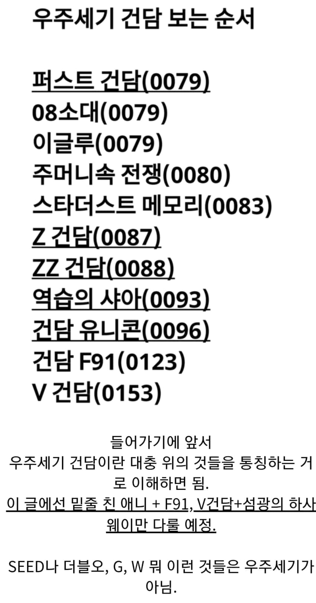
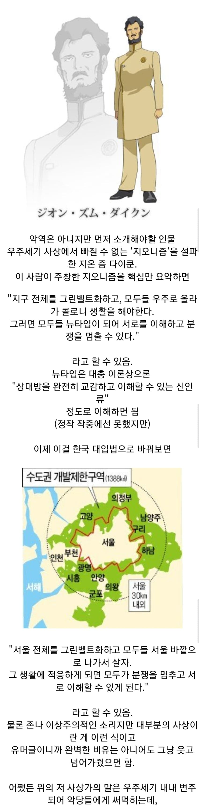

너 애초에 내용 다 알고 있었잖아 ㅋㅋ
건담은 이국적인 이름을 잘 짓는거 같애
난 시드만 봤는데 위에 왜 없음?
비우주세기는 건담아니야~
아~ 에반게리온도 비우주세기야?
ㅇㅇ
패트릭 자라: 수도권 과밀화로 인한 도시문제를 일으킨 열등한 서울사람들을 우수한 지방사람들이 지배해야하며 나아가 서울사람들을 멸종시켜야한다
라우 르 크루제: 땅값에 미친 서울사람들과 지방사람들은 공멸해야한다
길버트 듀랜달, 아우라 마하 하이발: 모든 인간의 유전자를 해석해서 적재적소에 거주하게 하면 분쟁이 없어지고 전인류의 행복이 올 것이다
시드는 사실 지오니즘이랑은 거리가 있는 주제여서 치환해도 이정도로 밖에 못함
거긴 진짜 종족전쟁 멸종전쟁 하잖아
오마쥬를 하긴 했지만 같은 사상을 가지고 만들게되면 그건 리메이크니까 ㅇㅇ..
건담 유니콘대로라면 지방이 반란 안일으키는게 이상하네 ㅋㅋㅋ
처음에 지온이 말했던 신인류는
나약한 어제의 나는 죽었다. 식으로 지구를 그린벨트 하고 다같이 우주에 살며 지구-콜로니 라는 이분화된 신분 차이 없이 지내다 보면 서로가 서로를 이해 하게 될거다. 이거 였던거 같은데
바로 다음 세대에 갑자기 뜬금없이 초능력자가 나와서 뉴타입의 의미가 지온이 생각했던거랑 달라졌지
젠장 서울놈들
사야가 아니었구나
풀 프론탈이랑 마프티 나비유 에린은 독립열사잖아 ㅠㅠㅠㅠ
혁명가니뮤ㅠㅠㅠㅠㅠㅠ
풀 프론탈도 마프티도 그냥 병신이잖아...
풀 프론탈은 그냥 식민지 독립운동가고
마프티도 부르주아 모가지 따는 매운맛 홍길동이잖아
결국 서울이 문제네
지구 더럽게 좋아하네
하사웨이가 머임? 중사웨이도 있나? ㅋㅋㅋㅋㅋㅋㅋㅋㅋㅋ
상사웨이만 나오면 된다
원사웨이는 에필로그라서 뺌?
2계급 특진해서 준위웨이로 나옵니다
중위겠지 준위가 아니라 ㅡㅡ;;
샤아 미친 새끼는 지구 인류 멸망 직전까지 가게 하잖아
서울이 모든 일의 원흉이다
서울을 없애버리자
? 스페이드노이드는 사람이 아닌데?
엔젤하이로
건담 세계관에서 저따위 개똥사상 가지고 수십억 씩 독가스 뿌려 죽이고 콜로니 존나 부수면서 내분 일으킬 시간에 우주 개발 했으면 이미 태양계 바깥까지 진출 했을거 같다는 나쁜 말은 ㄴㄴ
문과가 또...
여기는 지온 맘 없죠?
콜로니 떨구기 같은 병신 내분 총질 할 시간에 우주개발이나 하지
역시 서울이 문제였군
다 제정신이 아니네 ㅋㅋㅋㅋㅋ
경찰이 장갑차 타고 다니면서 일부 특권층 제외하면 재산 몰수하고 수도권 주거권 압수해서 강원도 판자촌으로 강제이주시키고 투표권을 뺏어가는 세계관
제정신일 수 없다
당연히 설득력이 있으니 세력이 있는 건데 저새끼들 하나같이 수단이 병신임
샤아 (샤아 아님) 이 새끼는 진짜 개 ㅁ도라이였네 ㅋㅋㅋ
우주세기 건담 기준으론 지구인들이 대부분 군사력과 돈만 있는 쓰레기들이 맞음 식량도 우주 콜로니 천연자원도 목성등 다 우주에서 가져오면서 돈이랑 군사력으로 착취만 하는것들 그런주제에 스페이스노이드들 무시하는거 엄청 심하고
하사웨이 여미새 같은 놈
역습의 샤아 얘기 저거
한강에 원자력발전소 짓자는 그거 아니냐 ㅋㅋㅋㅋ
노도강은 서울 취급 못받으니까 봐주세요
근데 아이러니하게도 시간이흐를수록 서울만 점점더 공고히되어가지 않나
경제개발 해도 모자랄 시간에 전쟁을 존나 했으니... 콜로니는 특성상 외부공격에 존나 취약하니까 전쟁이 이어질 수록 쉽게 파괴되지 않고 그 자체로 거주에 적합한 지구 위에 자리잡은 연방 정부만 더 강력해지는거지
건담윙 : 부동산이 한국인의 적이다! 따라서 지방에서 육성한 소년병 5명을 파견해서 모든 부동산을 해체한다
??? : 맞다! 그러니까 모든 부동산을 없애야 한다
(강남에 최신 부동산 5채+a 은닉 중)
저게 드라이하게 들으니까 잘 이해가 안되는데
콜로니 애들은 산소세도 내야함 숨쉬는 것도 돈인 실제 완전 노예 상태임
정부가 개똥같은 임대주택(철근 반 빼먹음)을 시골 땅에 지어서 월세 50 씩 받아먹음(세금 별도)
근데 강제 이주임 중산층과 하층민들 싹 지방으로 내쫓음
거기에 서울보다 2배 비싼 국영마트에서만 물건 사야함
이러면 당장 서울 불바다 외치면서 들고 일어나는게 맞는데
들고 일어나면 바로 해당 지역에 국군 행진 퍼레이드 함
그런데 서울민 옹호하는건 뭐다?
존나 이해 잘 되네 ㅋㅋ